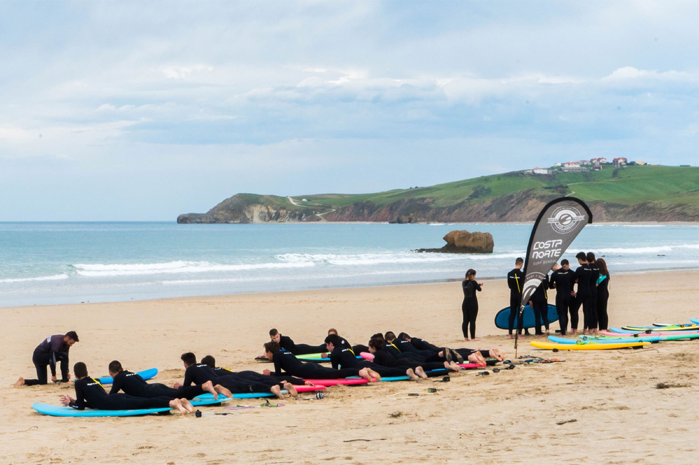
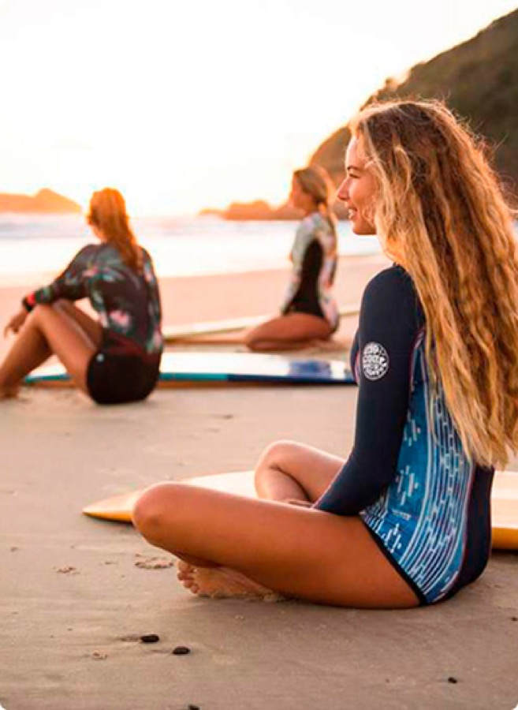
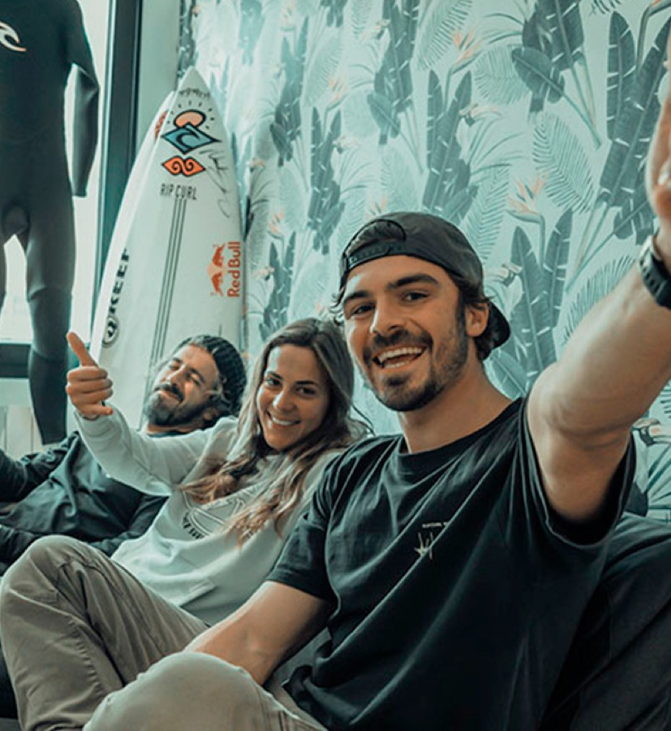
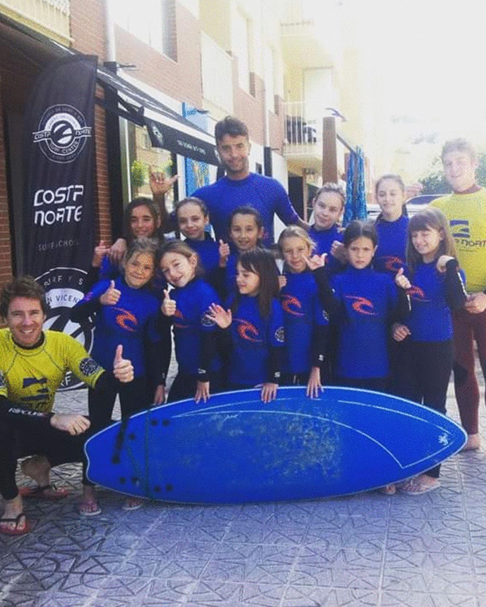
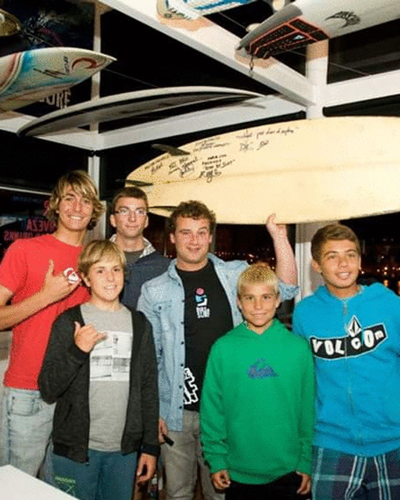
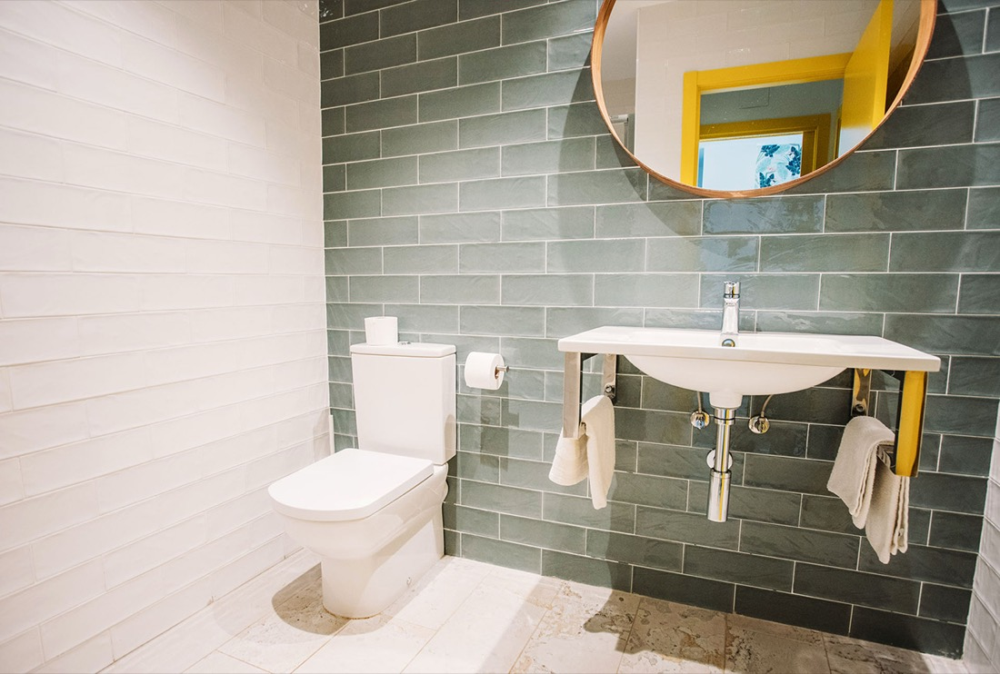
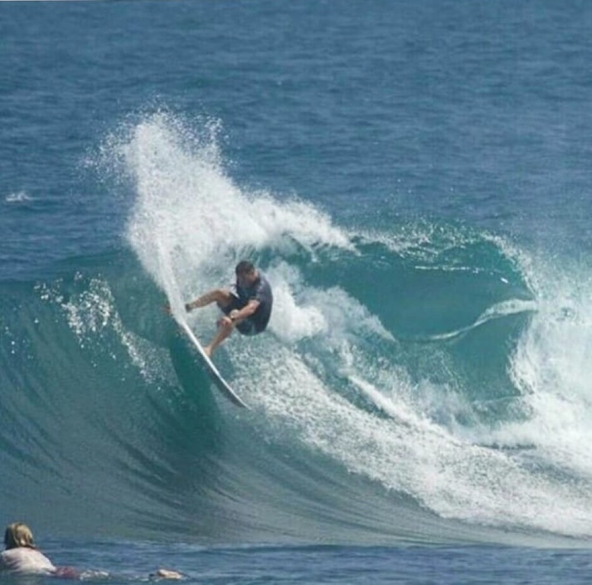
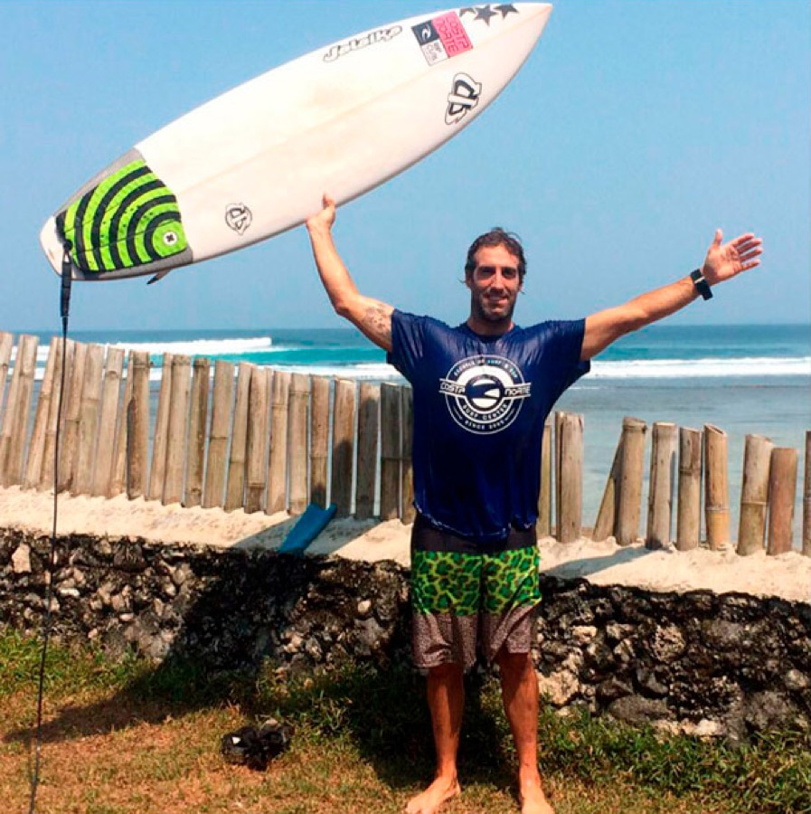
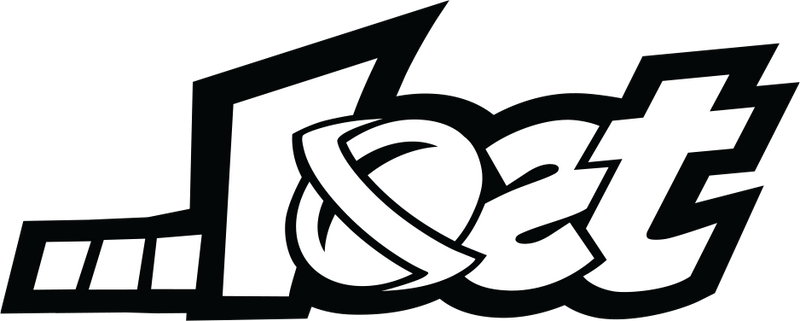

Anfänger
Deine erste Welle, egal wie alt du bist. Theorie am Strand und ab dem ersten Tag ins Wasser.
Die offizielle Schule von San Vicente, mit Rip Curl seit 2006.
Unsere Videos, gedreht in San Vicente de la Barquera.
Surf and friends in San Vicente de la Barquera, 2020
Surfkurse in San Vicente
Rip Curl GromSearch 2021
Surfen und SUP in der Schule
2-stündige Einheiten, vormittags oder nachmittags, in kleinen Gruppen. Board, Rip-Curl-Neoprenanzug und Versicherung inklusive.

Deine erste Welle, egal wie alt du bist. Theorie am Strand und ab dem ersten Tag ins Wasser.

Für alle, die schon Wellen nehmen und mit einem Surflehrer an der Seite den nächsten Schritt machen wollen.

Wettkampftraining mit Videoanalyse jeder Einheit.

In der Flussmündung, in den Wellen von Merón, SUP Race oder Privatstunde. Ab 7 Jahren.
Surflehrer mit ISA-, TD1-, TD2- und INEF-Abschluss. Auch Privatstunden und Surfskate.
Jeden Tag im Wasser, ein Apartment direkt am Strand und tolle Leute. Such dir deins aus.

Unser Beliebtestes. Jeden Tag Surfen oder SUP.

Die Intensiv-Variante, mehr Zeit im Wasser.

Einmal im Jahr, mit Rip-Curl-Surfern.

Ein Camp nur für Frauen und Mädchen.
Camps für Erwachsene, Wochenendpakete und das Sommercamp für Jugendliche mit Costa Verde Surf Experience.
Anerkannt vom kantabrischen, spanischen und europäischen Surfverband.

Iván Aja „Norrys“ beginnt, in San Vicente de la Barquera Surfen zu unterrichten.

Rip Curl wird Hauptsponsor der Schule.

Wir kaufen das erste Apartment und veranstalten das erste Surfcamp.

Trainingslager der spanischen Surf-Nationalmannschaft bei Costa Norte.

Die Costa Norte SUP School öffnet, in der Flussmündung und in den Wellen.

Die Boards von Costa Norte bekommen einen eigenen Namen.

Wir ziehen auf 350 m² um, 600 mit der Terrasse.

Wir erweitern die Unterkünfte direkt am Strand.

Offizielle Schule, Surfcamps, zwanzig Apartments und Rip Curl vom ersten Tag an.
Zwanzig Apartments neben der Schule und dem Strand, 2019 renoviert. Direkt auf unserer Website buchen, ohne Provision.


Neun Typen, für 2 bis 5 Personen
Die Surfer, die mit Costa Norte trainieren, an Wettkämpfen teilnehmen und reisen.
Suances und San Vicente. Regular. Jeder lange Rechts-Pointbreak.

Llanes. Goofy. Tubes und Carving voll auf der Kante.

Rund um die Welt. Regular. Die Rechte von La Santa.

Suances. Goofy. Los Locos.
Rip-Curl-Botschafter in Kantabrien, und Norrys, unsere eigene Boardmarke.

Rip-Curl-Botschafter-Shop in Kantabrien. Sponsor der Schule seit 2006: Neoprenanzüge, Kleidung und Zubehör jeder Saison.
Marken im Shop



Av. Francisco Giner de los Ríos, 46
San Vicente de la Barquera, Kantabrien (Spanien)